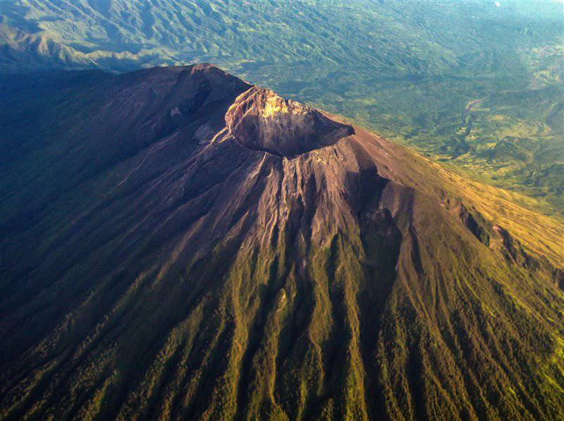

O estratovulcão Agung é a montanha mais alta e sagrada de Bali, na Indonésia e encontra-se numa região habitada por cerca de quatro milhões de pessoas. Embora esteja em erupção de forma quase contínua, a última grande erupção deste estratovulcão ocorreu em 1963 e foi uma das mais devastadoras da história do país: durou 11 meses e produziu uma perigosa chuva de cinzas e fluxos piroclásticos que provocaram mais de mil mortos. Entrou em erupção pela última vez em Maio de 2019.